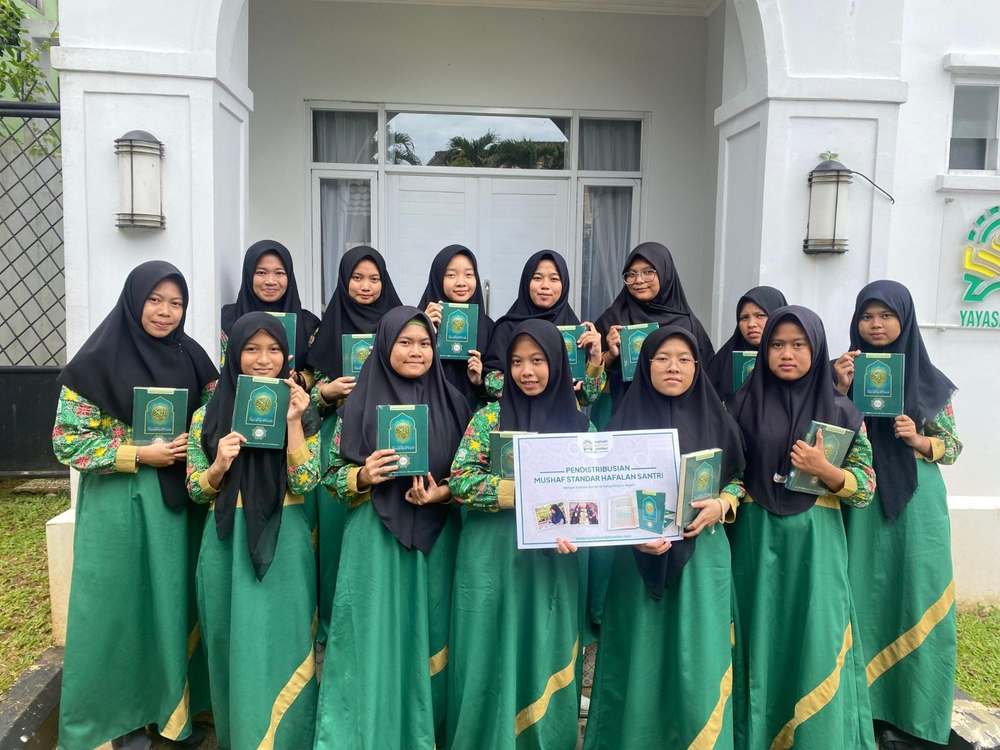
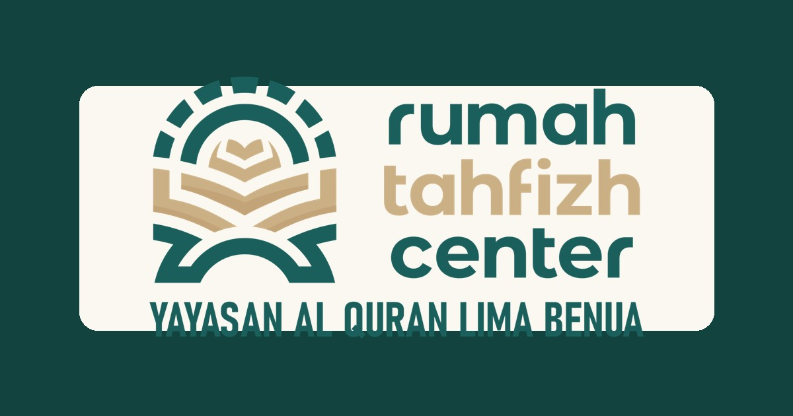
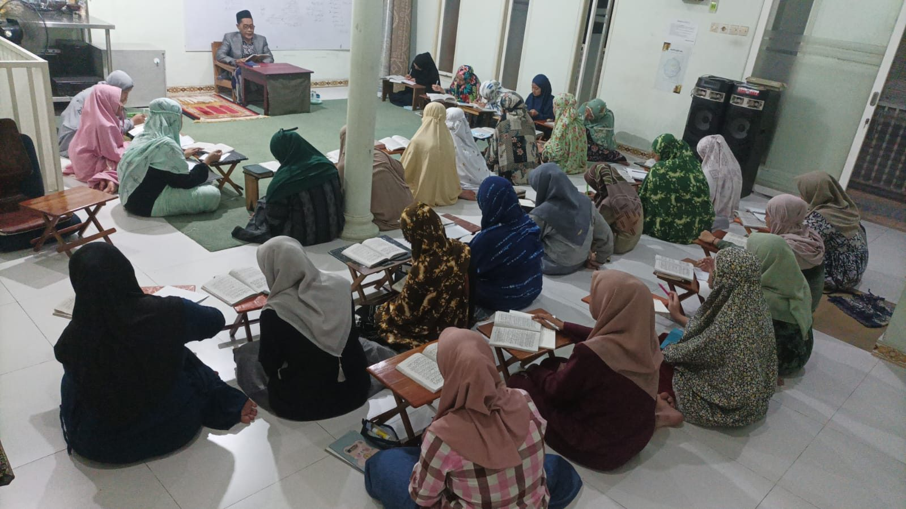
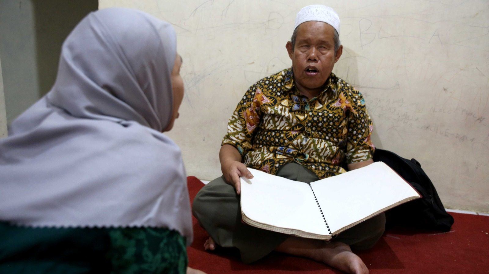
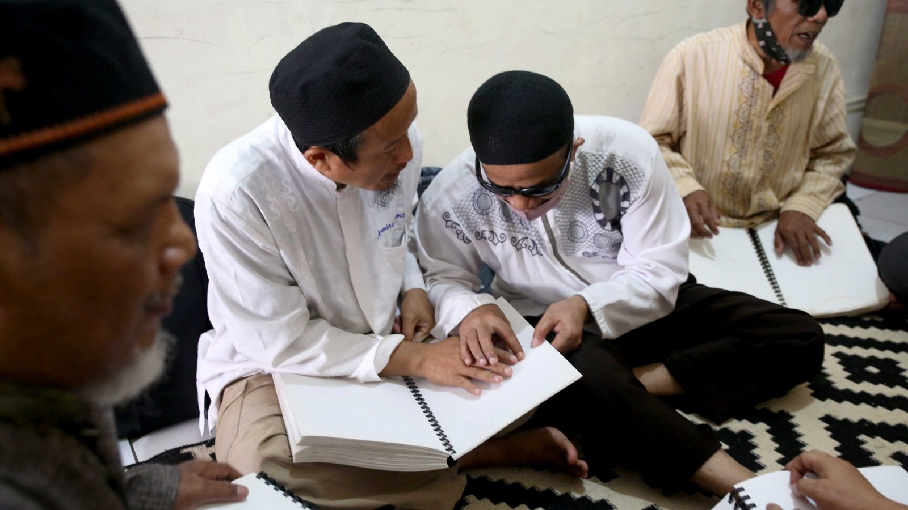
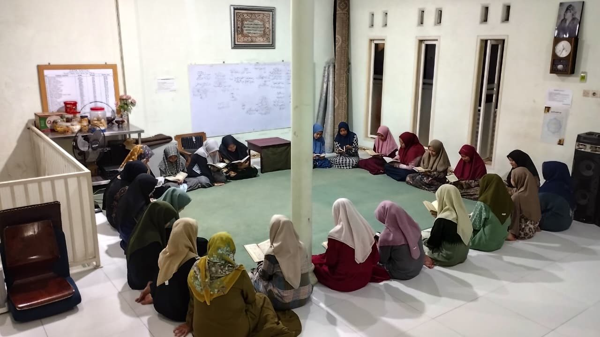
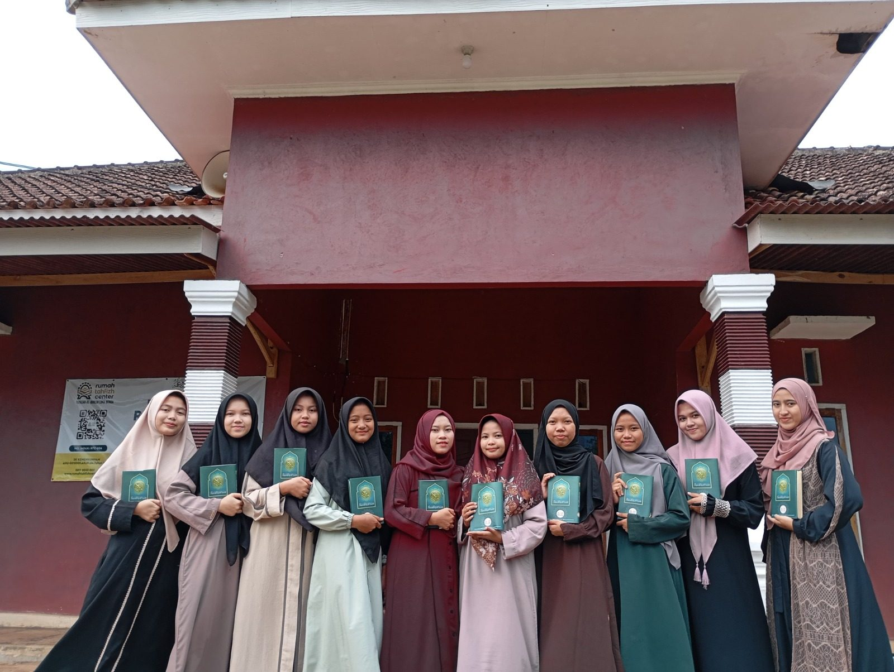
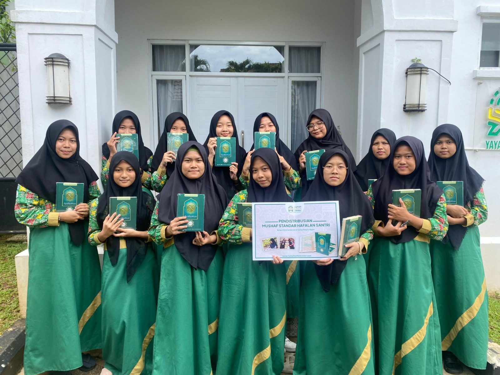
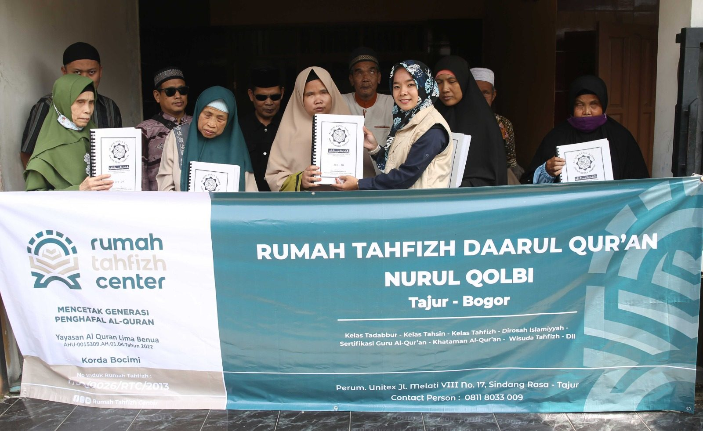

Beasiswa Santri Tahfizh Dhuafa
Biaya pendidikan dan kebutuhan harian santri penghafal Al-Qur'an dari keluarga yang tidak mampu.
Rasakan dahsyatnya doa Malaikat subuh, sekaligus jadi bagian dari perjalanan santri dhuafa menghafal Al-Qur'an 30 juz.

Keutamaan Sedekah di Waktu Subuh
Setiap subuh, dua Malaikat turun ke bumi. Satu mendoakan yang bersedekah, satu lagi mendoakan sebaliknya bagi yang menahan hartanya.
Tidaklah seorang hamba memasuki waktu subuh kecuali ada dua Malaikat yang turun. Salah satunya berdoa, "Ya Allah, berikanlah ganti bagi orang yang bersedekah." Lalu yang lain berdoa, "Ya Allah, berikanlah kehancuran bagi yang menahan hartanya." — HR. Bukhari & Muslim
Bayangkan: sedekah subuhmu hari ini bisa jadi wasilah seorang santri menghafal satu ayat lebih dekat menuju hafizh 30 juz. Dan Allah ganti rezekimu berlipat, dari arah yang tak kamu duga.
Kenali Gerakannya
Gerakan Sedekah Subuh Sahabat Tahfizh mengajak Sahabat memulai pagi dengan sedekah. Setiap rupiahnya diarahkan khusus untuk mencetak generasi penghafal Al-Qur'an dari keluarga dhuafa — termasuk kelas tahfizh untuk saudara tunanetra lewat mushaf Braille.
Sudah ratusan Sahabat bergabung dan menjadi bagian dari perjalanan hafalan santri kami, mulai dari Rp2.000.



Kenapa Ratusan Sahabat Bertahan
Tidak perlu menunggu kaya. Konsisten kecil setiap subuh lebih dicintai Allah daripada besar tapi sekali lalu berhenti.
Anda tahu persis ke mana sedekah Anda pergi. Bukan sekadar transfer lalu hilang kabar — progres hafalan santri dilaporkan rutin.
Kami bantu Anda menjaga kebiasaan ini agar tidak putus di tengah jalan, lewat pengingat dan motivasi setiap pagi.
Di setiap program tahfizh, nama-nama Sahabat donatur turut didoakan para santri penghafal Qur'an usai murojaah.
Ke Mana Sedekahmu Disalurkan
Setiap sedekah subuh diarahkan ke salah satu dari tiga program inti berikut, dengan pelaporan yang dibagikan ke seluruh Sahabat.

Biaya pendidikan dan kebutuhan harian santri penghafal Al-Qur'an dari keluarga yang tidak mampu.

Tempat tinggal yang layak agar santri bisa fokus menghafal tanpa terganggu kondisi tempat tinggal.

Mendukung para pengajar yang membimbing santri murojaah dan menerima setoran hafalan setiap hari.
Satu sedekah subuh yang kamu kira kecil, bisa jadi ayat pertama yang dihafal seorang santri hari ini.
Jadi Sahabat TahfizhMereka Yang Sudah Bergabung
Alhamdulillah, sejak jadi Sahabat Tahfizh saya jadi lebih ringan sedekah tiap pagi. Dan lihat laporan santrinya khatam hafalan — rasanya ikut bahagia.
Yang bikin saya betah, sedekahnya kecil tapi ada laporannya. Jadi tahu uangnya benar-benar sampai ke santri, bukan cuma transfer terus hilang.
Awalnya coba-coba Rp2.000 sehari. Sekarang malah nagih, karena tiap pagi diingatkan dan merasa ikut punya andil ada hafizh baru.
Saya senang anak-anak santrinya mendoakan para donatur. Buat saya itu jauh lebih berharga daripada nominal yang saya keluarkan.


Pertanyaan yang Sering Diajukan
Sedekah subuh bisa dimulai dari Rp2.000. Tidak ada minimal besar — yang kami utamakan adalah konsistensi kecil setiap subuh, bukan nominal besar sesekali.
Dana disalurkan ke tiga program: beasiswa santri tahfizh dhuafa, wakaf pembangunan asrama, dan operasional guru tahfizh serta musyrif. Laporan penyaluran dan progres hafalan santri dibagikan rutin ke seluruh Sahabat.
Ya. Rumah Tahfizh Center berada di bawah Yayasan Al Quran Lima Benua dengan legalitas Yayasan Nomor AHU-0026486.AH.01.12.Tahun 2023 tanggal 1 November 2023.
Anda menerima laporan penyaluran rutin, pengingat sedekah subuh harian, dan nama Anda turut didoakan santri penghafal Qur'an usai murojaah.
Ambil Bagian Sekarang
Mulai dari Rp2.000 hari ini. Doa Malaikat subuh, laporan hafalan santri, dan pahala yang mengalir — semuanya dimulai dari satu ketukan.
Mulai Sedekah Rp2.000 →Via WhatsApp resmi 0811 8033 009 · Program terverifikasi Yayasan Al Quran Lima Benua